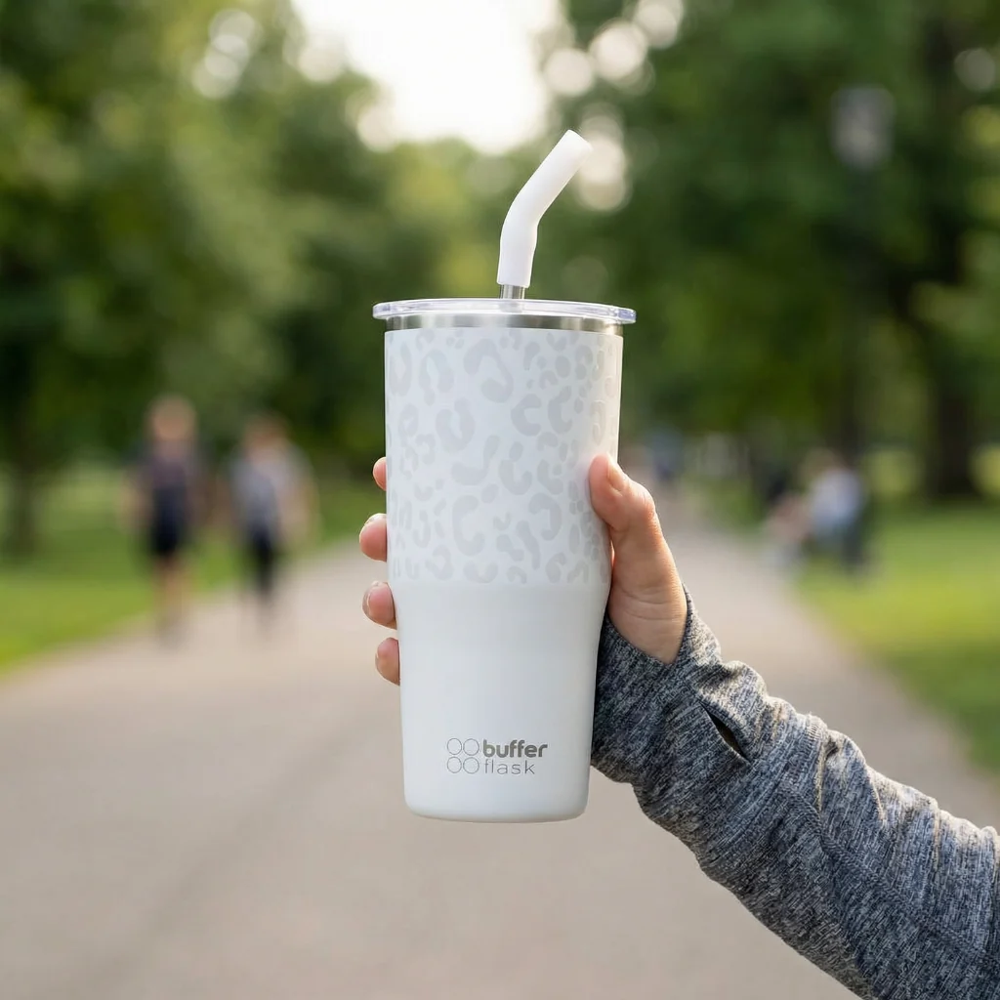

Descripción producto
Mug Termico Buffer 750 ml Ice leopardo. Una botella diseñada para acompañarte en todas tus aventuras, pero de la forma más cómoda. Tu Buffer es la solución para beber tus tragos favoritos en todo lugar y a toda hora.
Comodidad y resistencia en cada sorbo.
Características destacadas
Materiales
- Acero inoxidable de alta calidad: Su acero 18/8 (acero inoxidable 304) no se corroerá ni oxidará.
Contexto de marca
Buffer Flask es una marca popular de botellas, termos y vasos térmicos de acero inoxidable, reconocida por combinar diseños modernos en tendencia con una gran eficiencia para conservar la temperatura de los líquidos. Los usuarios destacan que mantienen el hielo y la temperatura por muchas horas, compiten bien en precio frente a marcas más costosas como Stanley y resultan muy cómodas para el gimnasio, la universidad o el trabajo.